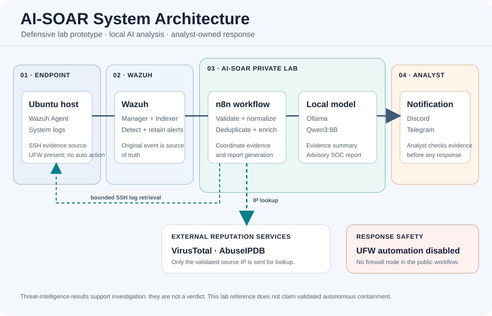
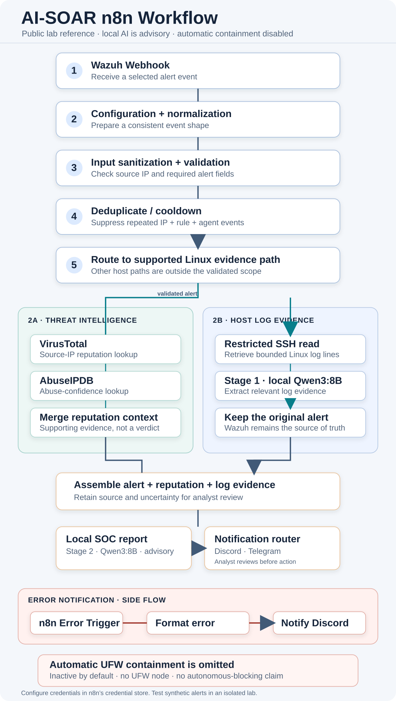

[Project Showcase] AI-SOAR: From an Idea to a Safer SOC Workflow | Từ ý tưởng đến một quy trình SOC an toàn hơn
🇻🇳 Bản tiếng Việt ở phía dưới.
[Project Showcase] AI-SOAR: From an Idea to a Safer SOC Workflow
This started with a practical question: could we make repetitive Level 1 alert triage less manual without sending an organization’s full security logs to a public AI service? I worked on this as a university capstone with a team. My part centered on coordinating the architecture and integration, so a lot of my time went into deciding where each component should stop, and checking that the pieces could work together.
We kept the first version inside a lab. Wazuh remained the source of security alerts and evidence; n8n handled the workflow; and Qwen3:8B ran locally through Ollama to summarize bounded log evidence and draft an incident report. VirusTotal and AbuseIPDB added reputation context for a source IP, while Discord and Telegram were notification channels. That still sends an indicator to external services, so “local AI” does not mean that every piece of data stays local.

Figure 1. System architecture for the redacted lab reference. Automated UFW containment is disabled. / Hình 1. Kiến trúc hệ thống cho bản lab đã lược bỏ thông tin riêng. Tự động chặn UFW đang tắt.
Turning the idea into a flow
Before wiring nodes together, we mapped the boundaries: the monitored Linux endpoint, Wazuh, the orchestration and local model host, and external reputation and notification services. Then we built the flow in smaller steps: receive a Wazuh alert, validate and normalize it, suppress duplicates, enrich the source IP, collect a limited amount of endpoint context over SSH, ask the local model to extract evidence, assemble a report, and notify an analyst.

Figure 2. High-level n8n workflow; the public reference has no firewall execution node. / Hình 2. Luồng n8n ở mức tổng quan; bản tham khảo công khai không có node thực thi firewall.
Splitting the model work into two stages made the responsibilities easier to review. The first stage summarizes relevant log evidence. The second combines that summary with the original alert and threat-intelligence results to draft a report. The model can help explain evidence, but its prose is advisory; it does not get authority to run a firewall command.
The problems that changed the design
The first challenge was input quality. Alerts can arrive with different shapes, and repeated events can waste API and model calls. We added normalization, source-IP validation, and a configurable deduplication window before enrichment. This also made it easier to keep the original Wazuh alert as the authoritative record instead of letting a model rewrite the facts.
The second challenge was privacy and uncertainty. Local inference reduced the amount of log content sent to an AI provider, but reputation lookups still send the selected IP to VirusTotal and AbuseIPDB. Their responses are supporting evidence, not a verdict. We kept those boundaries explicit and treated missing or conflicting enrichment as a reason to investigate, not as permission to act.
The most important finding came during a review of the response path. In the workflow export, both outputs of the “Should Block IP?” decision reached the SSH node that ran a UFW deny command. The configured severity and reputation thresholds also were not enforced at that final gate. A controlled UFW command had worked in the lab, but that only showed the command could apply a rule; it did not prove that the automated decision was safe.
So I removed the containment command from the public workflow and left automated blocking disabled. That is a less impressive demo, but it is the honest state of the project: end-to-end automated containment still needs a fail-closed gate, negative and failure-path tests, rollback evidence, and a careful review of SSH permissions. Notifications are not an approval mechanism, and the AI report is not authorization.
What I learned by building it
I learned to treat “it ran once” as the beginning of validation, not the end. A response system has to prove what it does when input is malformed, an API is unavailable, a branch is false, a command fails, or a rollback is needed. Separating detection, enrichment, analysis, notification, and action also made the design easier to reason about—and made it clear that action deserves a stricter release bar than analysis.
The public repository contains a redacted n8n reference export and implementation notes. It is inactive by default, contains no credentials or original thesis PDF, and has no UFW execution node. It is a lab reference, not a one-click production deployment. View the AI-SOC-Analyst-L1 repository.
This was team work, and I am grateful for the people who owned the Wazuh, local-model, threat-intelligence, notification, and testing pieces. My biggest takeaway was about integration: the system becomes safer when every component has a clear boundary and every claim is limited to evidence we actually have.
[Project Showcase] AI-SOAR: Từ ý tưởng đến một quy trình SOC an toàn hơn
Dự án bắt đầu từ một câu hỏi khá thực tế: liệu mình có thể giảm bớt những thao tác lặp lại khi phân tích alert Level 1 mà không phải gửi toàn bộ log bảo mật của tổ chức lên một dịch vụ AI công cộng không? Đây là đồ án capstone mình thực hiện cùng một nhóm ở trường. Phần việc của mình tập trung vào điều phối kiến trúc và tích hợp, nên mình dành nhiều thời gian xác định mỗi thành phần nên dừng ở đâu và kiểm tra xem chúng có phối hợp được với nhau không.
Nhóm giới hạn phiên bản đầu trong môi trường lab. Wazuh tiếp tục là nguồn tạo alert và bằng chứng bảo mật; n8n điều phối workflow; Qwen3:8B chạy local qua Ollama để tóm tắt log có giới hạn và soạn báo cáo sự cố. VirusTotal và AbuseIPDB bổ sung thông tin uy tín cho IP nguồn, còn Discord và Telegram dùng để gửi thông báo. Dù model chạy local, IP được tra cứu vẫn gửi tới dịch vụ bên ngoài; vì vậy “AI local” không có nghĩa là mọi dữ liệu đều nằm trong máy.
Biến ý tưởng thành luồng xử lý
Trước khi nối các node, nhóm xác định các ranh giới: endpoint Linux được giám sát, Wazuh, máy chạy n8n và model local, cùng các dịch vụ reputation và notification bên ngoài. Sau đó nhóm triển khai từng bước nhỏ: nhận alert từ Wazuh, kiểm tra và chuẩn hóa dữ liệu, loại alert trùng, enrichment IP nguồn, lấy một lượng log giới hạn qua SSH, nhờ model local trích xuất bằng chứng, ghép thành báo cáo rồi gửi cho analyst.
Chia phần AI thành hai giai đoạn giúp trách nhiệm của từng bước dễ xem xét hơn. Giai đoạn đầu tóm tắt bằng chứng trong log. Giai đoạn sau kết hợp phần tóm tắt với alert gốc và kết quả threat intelligence để soạn báo cáo. Model có thể hỗ trợ giải thích bằng chứng, nhưng nội dung do nó tạo ra chỉ mang tính tham khảo; model không có quyền chạy lệnh firewall.
Những vấn đề khiến thiết kế phải thay đổi
Khó khăn đầu tiên là chất lượng dữ liệu đầu vào. Alert có thể có cấu trúc khác nhau, còn sự kiện lặp lại gây tốn lượt gọi API và model. Nhóm bổ sung bước chuẩn hóa, kiểm tra IP nguồn và khoảng thời gian dedup trước khi enrichment. Nhờ vậy, alert gốc từ Wazuh vẫn là hồ sơ chính thức, thay vì để model viết lại dữ kiện.
Khó khăn tiếp theo là quyền riêng tư và độ không chắc chắn. Chạy inference local giúp giảm lượng log gửi tới nhà cung cấp AI, nhưng việc tra cứu reputation vẫn gửi IP được chọn tới VirusTotal và AbuseIPDB. Kết quả của các dịch vụ này chỉ là bằng chứng hỗ trợ, không phải kết luận cuối cùng. Nhóm giữ rõ ranh giới đó và xem dữ liệu thiếu hoặc mâu thuẫn là lý do để kiểm tra thêm, chứ không phải lý do để tự động hành động.
Phát hiện quan trọng nhất đến khi rà soát nhánh response. Trong bản workflow export, cả hai đầu ra của điều kiện “Should Block IP?” đều nối tới node SSH chạy lệnh UFW deny. Các ngưỡng severity và reputation đã cấu hình cũng chưa được kiểm tra ở cổng quyết định cuối. Một lệnh UFW chạy thành công trong lab chỉ chứng minh lệnh có thể thêm rule; nó chưa chứng minh quyết định tự động là an toàn.
Vì vậy, mình đã bỏ lệnh containment khỏi workflow public và để tính năng tự động chặn ở trạng thái tắt. Demo có thể kém ấn tượng hơn, nhưng đó mới là trạng thái trung thực của dự án: containment tự động đầu-cuối vẫn cần cổng fail-closed, kiểm thử nhánh âm và khi lỗi, bằng chứng rollback, cùng việc rà soát kỹ quyền SSH. Notification không phải cơ chế phê duyệt, và báo cáo AI không phải quyền cho phép hành động.
Điều mình rút ra khi triển khai
Mình học được rằng “chạy được một lần” chỉ là điểm bắt đầu của validation. Một hệ thống response phải chứng minh được điều gì xảy ra khi input sai định dạng, API không khả dụng, điều kiện trả về false, câu lệnh bị lỗi hoặc cần rollback. Việc tách detection, enrichment, analysis, notification và action cũng giúp thiết kế dễ suy nghĩ hơn; đồng thời cho thấy action cần tiêu chuẩn đưa vào sử dụng nghiêm ngặt hơn analysis.
Repo public có bản workflow n8n tham khảo đã lược bỏ thông tin riêng và tài liệu triển khai. Workflow mặc định inactive, không chứa credential hay file luận văn gốc, và không có node thực thi UFW. Đây là tài liệu tham khảo cho lab, không phải cấu hình triển khai production chỉ cần bấm chạy. Xem repository AI-SOC-Analyst-L1.
Đây là dự án làm theo nhóm; mình biết ơn các bạn phụ trách Wazuh, model local, threat intelligence, notification và kiểm thử. Điều mình nhớ nhất là bài học về tích hợp: hệ thống an toàn hơn khi mỗi thành phần có ranh giới rõ ràng và mọi kết luận đều giới hạn đúng theo bằng chứng mà nhóm thực sự có.